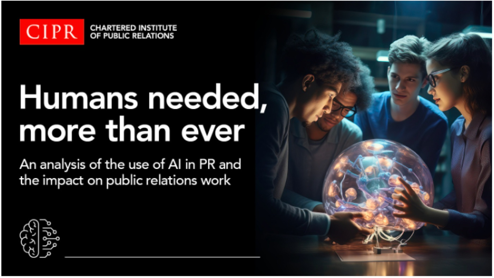
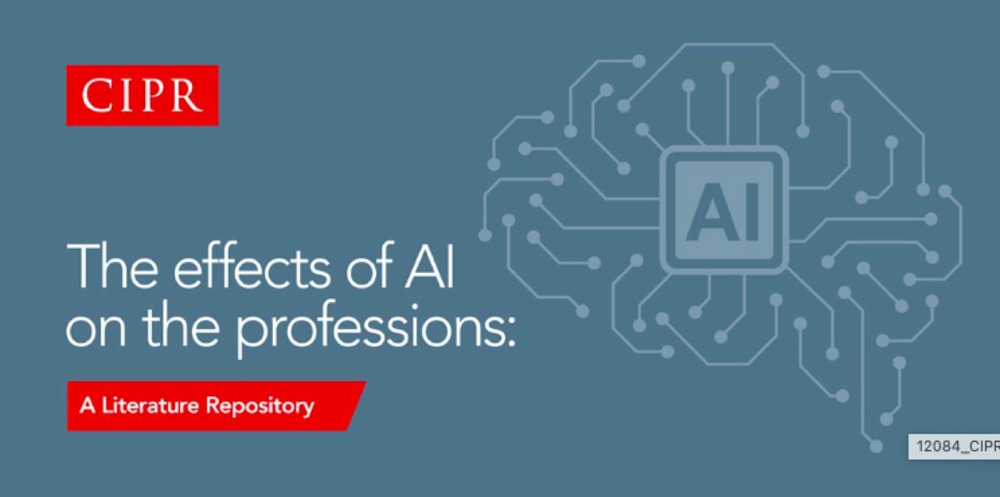

Publications
Publications
Books and chapters, peer‑reviewed journal articles, and commissioned reports — spanning responsible AI and professional practice, the economics of education, and applied evaluation.
Books & book chapters
- 2026 The Contribution of Public Relations to Shaping AI’s Role View the book →
- 2025 Staying Human in a Smart Machine World doi.org/10.1002/9781394275434.ch1 →
- 2025 Creative Exploration of Our Relationship with AI Read online →
Peer‑reviewed journal articles
- 2026 AI’s Penetration into Public Relations Practice and the Implications for Training and Higher Education
- 2020 Performance and Efficiency in Indian Universities
- 2019 Chief Executive Pay in UK Higher Education: The Role of University Performance
- 2019 The Efficiency of Private and Public Schools in Urban and Rural Areas: Moving beyond the Development Goals
- 2019 Are Technology Transfers Skill Biased?
Commissioned reports & working papers
- 2025 Will AI Twist the Art of Conducting a Survey? doi.org/10.5281/zenodo.15512134 →
- 2024 Behind the Guardrails — Can Users Bypass AI Safeguards? doi.org/10.5281/zenodo.14535092 →
- 2023 Humans needed, more than ever — an analysis of the use of AI in public relations and the impact on public relations work
- 2021 The AI and Big Data Readiness: Assessing the Public Relations Profession’s Preparedness for an AI Future
- 2021 Measuring the Impact of MedicSpot Technology in GP Consultations
- 2020 The Effects of Artificial Intelligence on the Professions: A Literature Repository
- 2020 The Economic Impact of the Coronavirus Pandemic for Leicester Available at SSRN →
National reports
Sector‑leading work with the CIPR
Three national reports for the UK’s Chartered Institute of Public Relations, tracking the profession over five years: AI in PR (2019–20) raised awareness of the ethical risks in AI adoption; AI Skills and Readiness (2021) evaluated practitioners’ preparedness; and AI Task Penetration (2023) quantified AI’s impact on PR workflows, identifying the areas that still require human judgment.


Research enquiries
Looking for a collaborator or co‑author?
I welcome approaches on responsible AI, AI governance, digital inclusion, and the economics of education and technology.